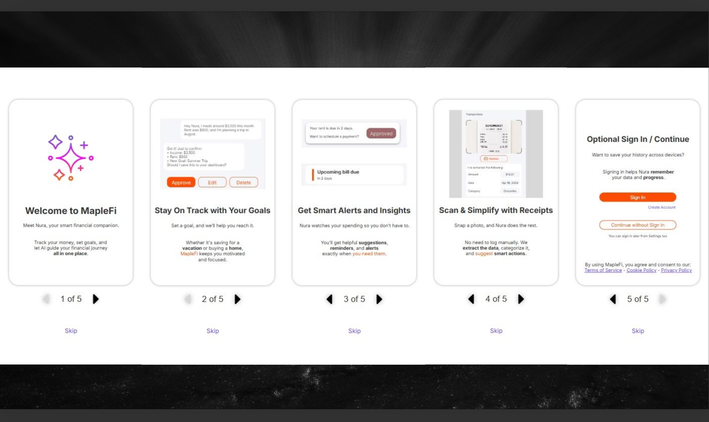
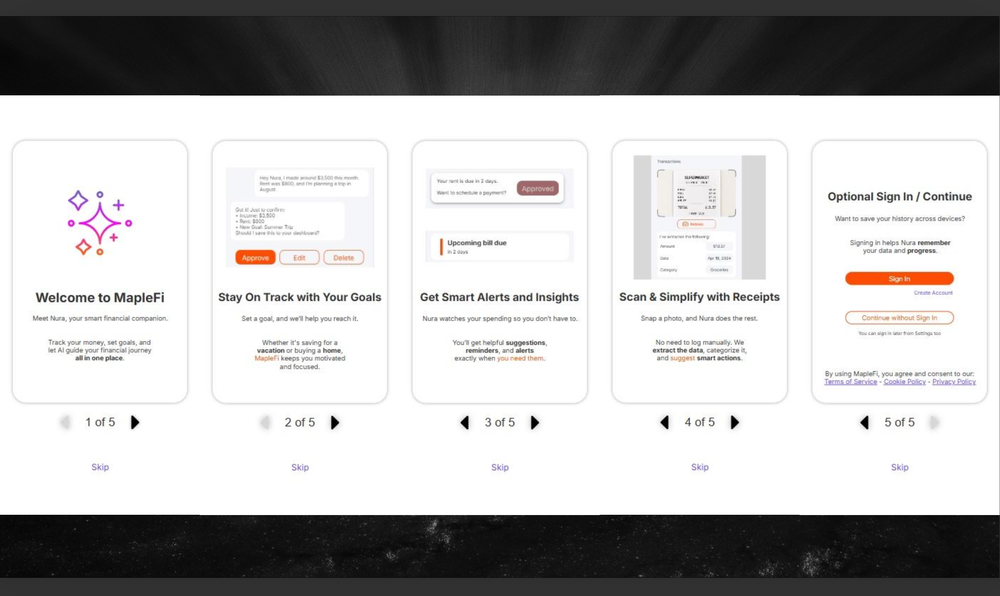

MapleFi – AI-Powered Personal Finance App
Redesigning a personal finance platform to simplify budgeting, integrate AI assistance, and create a calm, accessible experience for users managing their daily finances.
Context
MapleFi is an AI-powered personal finance app designed to help users plan, track, and manage their money with confidence. The goal was to unify budgeting, bill tracking, and credit monitoring into one clean experience.
Role
UX Designer — Led end-to-end UX redesign, from research and wireframing to prototyping and usability testing.
Duration
8-week sprint — Conducted research, wireframing, prototyping, and usability testing to deliver a polished redesign.
Tools
Axure, WCAG tools, Notion

The Challenge
Users struggled to see the full picture of their finances across different tabs. Complicated layouts, too many steps, and lack of feedback made managing money stressful.
I aimed to create a single, intelligent space for users to track expenses, set goals, and receive helpful insights — all guided by an AI assistant.
FreyFunds — the original version before redesign.

Introducing Nura
The heart of MapleFi is Nura, an AI assistant that helps users:
During prototype testing, users completed financial tasks 45% faster and reported feeling “more in control” of their money.

Smart Automation
To reduce manual effort, MapleFi lets users scan bills or receipts, and Nura automatically adds them to the expense tracker.
This feature turned repetitive input tasks into a smooth, one-tap experience.
Bill scanning and AI summarization by Nura.

Unified Design System
I built a modular design system for MapleFi, inspired by accessibility-first principles. It improved consistency and reduced design-to-development time by 40%.
The system includes UI components, color tokens, and accessible typography scales for better readability.
MapleFi design system — scalable, accessible, and cohesive.

Intuitive Settings & Onboarding
I redesigned the Settings section to make customization simple and approachable. Users can easily manage their profile and control Nura’s behavior in one place.
The onboarding flow was rethought as a 5-step guided introduction — improving first-time task success by 35%.
Personalized settings and 5-step onboarding flow.
 

Outcome
MapleFi turned personal finance into a personalized, stress-free journey.
It proved that AI can simplify—not complicate—financial decision-making.

Reflection
MapleFi taught me how AI, accessibility, and design systems can blend into a single experience.
What began as a redesign became a way to make financial management more human, intuitive, and inclusive.